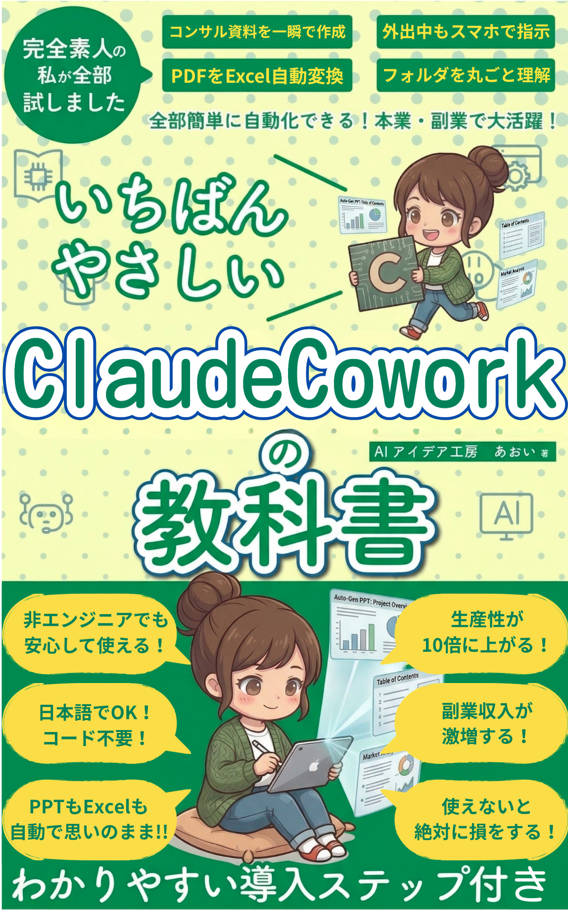
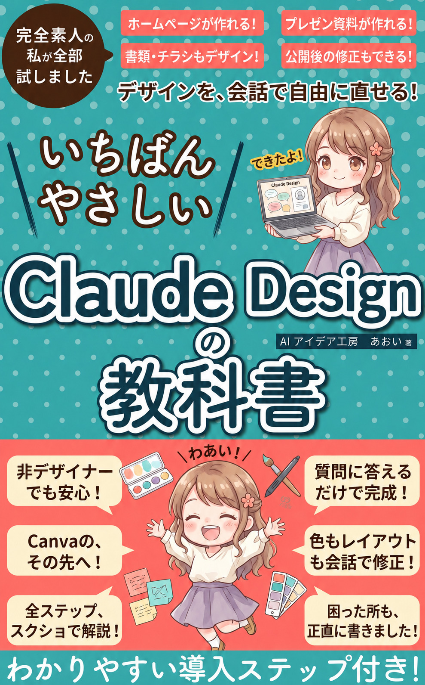

AIツールの基本ChatGPT・NotebookLM・Obsidian
便利な道具を、ひとつずつ自分のものに。
あおいの本棚
今のあなたに近いテーマを選んでください。
表紙をタップすると、そのままAmazonのページに飛べます。
話題のClaude、まずは肩の力を抜いて触ってみましょう。
便利な道具を、ひとつずつ自分のものに。
うまく書けなくていい。まず一記事から。
あなたの好きは、そのまま誰かの役に立ちます。
もっと見たい方はこちらから。
7日で作家デビューする手順書
最短1日でClaudeと本を出す
出版後に伸ばす実践ノウハウ
Claudeの全体像がまずわかる
非エンジニアのためのClaudeCode
会社の仕事を自動化した記録

仕事を任せるCoworkの基本
ClaudeCode活用の実例集
アプリを作って売るまで体験
ChatGPT Codexをやさしく解説

資料整理が変わるNotebookLM
メモ管理の新定番を体験
知識ゼロからの最初の一冊
画像生成の基本を最短で

最新の画像生成をやさしく
AI漫画と画像づくりの超入門

デザインもAIに任せる時代へ

AI占い副業の入門書
数秘術をAIで仕事にする
手相占いもAIでここまで
英語学習をAIで安く速く
TOEIC対策をChatGPTで